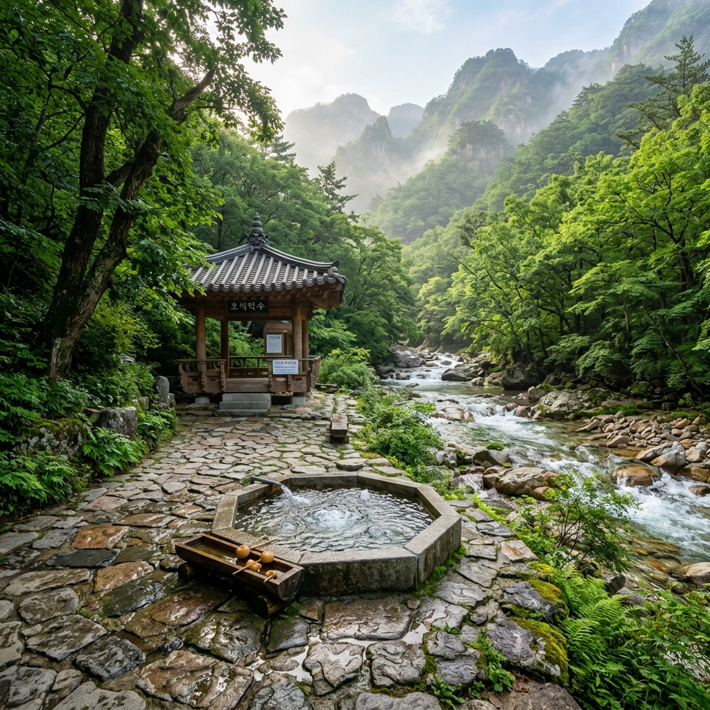
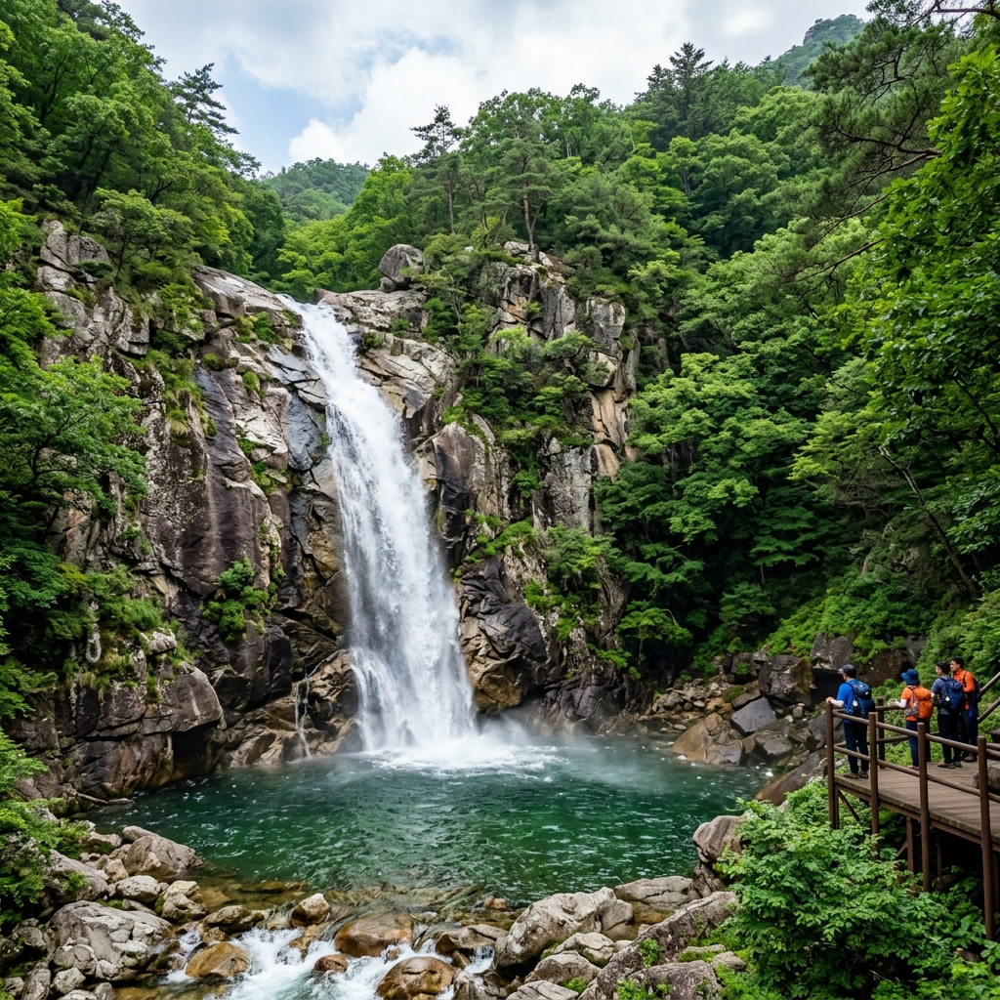
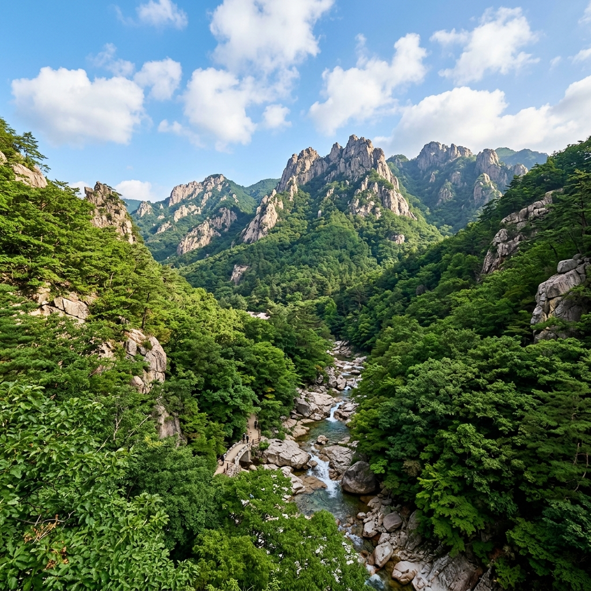

설악산 오색 당일치기 후기 — 약수탕부터 용소폭포까지, 버스로도 충분합니다
✍️ 직접 가보니
서울에서 동서울터미널 버스를 타고 오색 약수터 바로 앞에서 내렸습니다. 차를 가져가지 않아도 불편함이 없을 만큼 접근이 쉬웠습니다. 오색약수는 비릿하고 독특한 맛이라 처음에는 '이게 맞나?' 싶었는데, 물 자체보다 주변 공기와 분위기가 기분을 시원하게 해줬습니다. 주전골 코스는 용소폭포까지 왕복 3km라 부담이 없었고, 폭포 앞 바위에 앉아 물소리를 들으며 쉬는 것만으로도 더위가 달아났습니다.
오색 지구 — 설악산에서도 접근이 가장 쉬운 곳
강원 양양군 서면 오색리에 위치한 오색 지구는 설악산국립공원 남쪽 입구입니다. 탄산 함량이 높은 오색약수로 유명하고, 주전골 계곡 탐방로가 잘 갖춰져 있어 당일치기 나들이에 알맞습니다. 설악산 북쪽 소공원 지구에 비해 상대적으로 덜 붐비고, 계곡 경관이 수려해 여름 피서지로 꾸준히 인기입니다.
오색이라는 이름은 이곳에서 다섯 가지 색의 약초가 자란다는 데서 유래했다고 전해집니다. 오색 게스트하우스, 민박, 음식점, 편의점 등 숙박·편의 시설도 갖춰져 있어 1박 2일 코스로도 좋습니다.

오색약수탕 — 독특한 탄산 향과 철분 맛이 나는 천연 광천수
주전골 탐방로 — 구간별 소요시간과 볼거리
| 구간 |
누적 거리 |
주요 볼거리 |
| 탐방로 입구 |
0km |
오색약수·탐방안내소 |
| 독주폭포 |
0.5km |
작은 폭포, 약 15분 소요 |
| 선녀탕 |
1.0km |
여러 개의 소(沼)가 이어진 구간 |
| 용소폭포(龍沼瀑布) |
1.5km |
왕복 약 1시간, 폭포 규모 가장 큼 |
| 옥녀탕 |
2.0km |
일반 탐방 가능 종점(비성수기·주말 확인 필요) |
오색약수 — 마시는 방법과 효능에 대한 오해
오색약수는 천연 탄산약수로 철분과 탄산이 풍부합니다. 비릿하고 탄산감이 있는 독특한 맛 때문에 처음에는 낯설게 느껴질 수 있습니다.
마시는 방법에 특별한 제약은 없지만, 탄산 함량이 높아 빈속에 너무 많이 마시면 위가 불편할 수 있습니다. 일부 안내에서는 공복 음용을 권장하지만, 개인 체질에 따라 다릅니다. 약수라는 명칭이 붙었다고 해서 특정 질환의 치료 효과가 의학적으로 입증된 것은 아니므로, 건강 기능에 대한 과도한 기대는 삼가는 것이 좋습니다.

주전골 용소폭포 — 주전골 탐방로의 하이라이트, 암벽과 폭포가 조화를 이룹니다
솔직 장단점 — 기대와 달랐던 부분
좋았던 점:
- 주전골 탐방로는 경사가 완만하고 포장이 잘 돼 있어 남녀노소 이용 가능합니다.
- 계곡 옆을 따라 걷는 내내 물소리와 그늘로 시원합니다.
- 버스 접근이 편리해 차 없이도 당일치기가 가능합니다.
아쉬웠던 점:
- 성수기 주말에는 탐방로가 매우 혼잡합니다. 오전 일찍 출발하는 것을 권장합니다.
- 주전골 탐방로 자체는 왕복 3km로 짧아 트레킹을 좋아하는 분들에게는 심심할 수 있습니다.
- 오색약수 맛이 강해서 호불호가 갈립니다. 한 모금만 마셔보고 결정하는 것이 좋습니다.
교통과 숙박 — 버스와 당일치기 기준
버스: 동서울터미널 → 오색(속초 방향) 고속버스 이용 후 오색리 하차. 소요시간 약 2시간 40분~3시간. 속초 시외버스터미널에서도 오색 방향 시내버스로 이동 가능합니다.
자가용: 서울 기준 약 3시간(한계령 또는 56번 국도 경유). 오색 공용주차장 이용, 성수기 만차 주의.
당일치기 코스 예시: 오전 도착 → 오색약수 음용 → 주전골 탐방(왕복 1.5~2시간) → 오색 근처 식당 점심 → 오후 버스 귀경.

오색 지구에서 바라본 설악산 암릉 — 여름에도 웅장한 산세가 압도적입니다
💡 오색 여름 탐방 실전 팁
· 성수기 주말은 오전 8시 이전 도착이 쾌적합니다
· 주전골 물놀이 허용 구역은 방문 전 국립공원 공단 앱에서 확인 필수
· 오색약수 용기 지참 시 약수를 담아갈 수 있습니다(개인 용기 권장)
· 식당은 오색 탐방 입구 인근에 몇 군데 있으며, 닭갈비·산채정식이 인기입니다
📝 작성자 메모
설악산 하면 대청봉이나 울산바위만 생각하기 쉬운데, 오색 주전골은 체력 부담 없이 설악의 계곡미를 즐길 수 있어 가족 여행에 적합합니다. 버스 이용이 생각보다 편리해서 차가 없어도 충분합니다. 약수 맛은 개인차가 크니 기대치를 낮추고 분위기를 즐기는 마음으로 방문하길 권장합니다. 정보 기준일: 2026-07-07.
#설악산오색
#주전골계곡
#오색약수탕
#여름계곡피서
#용소폭포
#설악산국립공원
#양양여행
#속초당일치기
#강원계곡
#오색하루코스